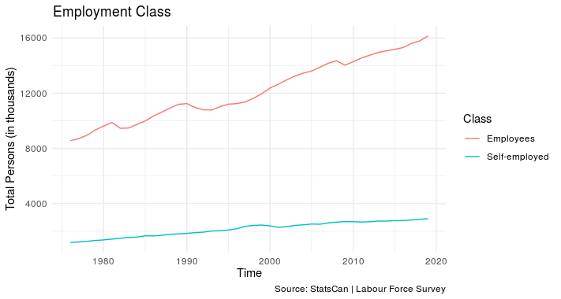
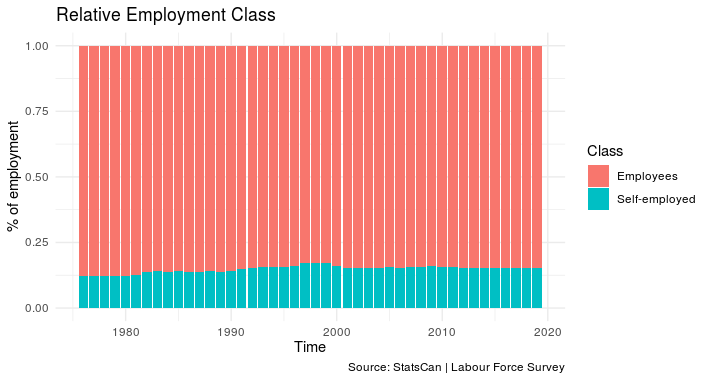

Canadian Employment Overview
Statistics Canada (or StatsCan) is the Canadian government agency commissioned with producing statistics to help better
understand Canada, its population, resources, economy, society, and culture. Statistics is a federal responsibility in
Canada, and Statistics Canada produces statistics for all the provinces as well as the federal government. In addition
to conducting about 350 active surveys on virtually all aspects of Canadian life, Statistics Canada undertakes a
country-wide census every five years on the first and sixth year of each decade
(from Statistics Canada, Wikipedia).
Statistics Canada provides a number of
Canadian Income Survey Products. This includes the Canadian Income Survey (CIS)—a cross-sectional survey that
assesses the income, income sources, and the economic status of individuals and families in Canada. Data from the
Labour Force Survey (LFS) is combined with data from the CIS. The February 24, 2020 reported statistics on the Official
Poverty Line based on the market basket measure
(from Statistics Canada, Wikipedia).
The Labour Force Survey and the Canadian Income Survey were the primary data sources used to create the following report. Below
is a short video explaining some history of the Labour Force Survey and Statistics Canada.
Median Income
Starting in 1976, StatsCan began collecting income related information from many Canadian households. I will be using this data to examine trends over time and see if there are items worth highlighting. As a note, regions that have been left out of the StatsCan report are Yukon, Northwest Territories, and Nunavat. Below, see the median income (in 2018 dollars) by province. Median income from Canada is included as well.
Regional Trends
Let's cut out some of the noise and look at a few key areas that are worth comparing. Canada can be looked at as having a few distinct regions and I have chosen to break them up into Eastern, Central, and Western. Eastern is comprised of Nova Scotia, New Brunswick, Prince Edward Island and Newfoundland. Central contains Ontario and Queber while Western is made up of Alberta, Manitoba, Saskatchewan and British Columbia. I've left in Canada as an overall aggregate comparison as well. See the chart below for trendlines over time for the each region.
Proportional Growth of Employment Sectors
Let's cut out some of the noise and look at a few key areas that are worth comparing. Canada can be looked at as having a few distinct regions and I have chosen to break them up into Eastern, Central, and Western. Eastern is comprised of Nova Scotia, New Brunswick, Prince Edward Island and Newfoundland. Central contains Ontario and Queber while Western is made up of Alberta, Manitoba, Saskatchewan and British Columbia. I've left in Canada as an overall aggregate comparison as well. See the chart below for trendlines over time for the each region.
Employment Sector Proportions
Let's cut out some of the noise and look at a few key areas that are worth comparing. Canada can be looked at as having a few distinct regions and I have chosen to break them up into Eastern, Central, and Western. Eastern is comprised of Nova Scotia, New Brunswick, Prince Edward Island and Newfoundland. Central contains Ontario and Queber while Western is made up of Alberta, Manitoba, Saskatchewan and British Columbia. I've left in Canada as an overall aggregate comparison as well. See the chart below for trendlines over time for the each region.
Employment Number Table - Sectors
Let's cut out some of the noise and look at a few key areas that are worth comparing. Canada can be looked at as having a few distinct regions and I have chosen to break them up into Eastern, Central, and Western. Eastern is comprised of Nova Scotia, New Brunswick, Prince Edward Island and Newfoundland. Central contains Ontario and Queber while Western is made up of Alberta, Manitoba, Saskatchewan and British Columbia. I've left in Canada as an overall aggregate comparison as well. See the chart below for trendlines over time for the each region.
Employment Class
Let's cut out some of the noise and look at a few key areas that are worth comparing. Canada can be looked at as having a few distinct regions and I have chosen to break them up into Eastern, Central, and Western. Eastern is comprised of Nova Scotia, New Brunswick, Prince Edward Island and Newfoundland. Central contains Ontario and Queber while Western is made up of Alberta, Manitoba, Saskatchewan and British Columbia. I've left in Canada as an overall aggregate comparison as well. See the chart below for trendlines over time for the each region.

Employment Class - Relative
Let's cut out some of the noise and look at a few key areas that are worth comparing. Canada can be looked at as having a few distinct regions and I have chosen to break them up into Eastern, Central, and Western. Eastern is comprised of Nova Scotia, New Brunswick, Prince Edward Island and Newfoundland. Central contains Ontario and Queber while Western is made up of Alberta, Manitoba, Saskatchewan and British Columbia. I've left in Canada as an overall aggregate comparison as well. See the chart below for trendlines over time for the each region.

Conclusion - Canadian Employment Overview
Let's cut out some of the noise and look at a few key areas that are worth comparing. Canada can be looked at as having a few distinct regions and I have chosen to break them up into Eastern, Central, and Western. Eastern is comprised of Nova Scotia, New Brunswick, Prince Edward Island and Newfoundland. Central contains Ontario and Queber while Western is made up of Alberta, Manitoba, Saskatchewan and British Columbia. I've left in Canada as an overall aggregate comparison as well. See the chart below for trendlines over time for the each region.